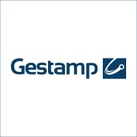
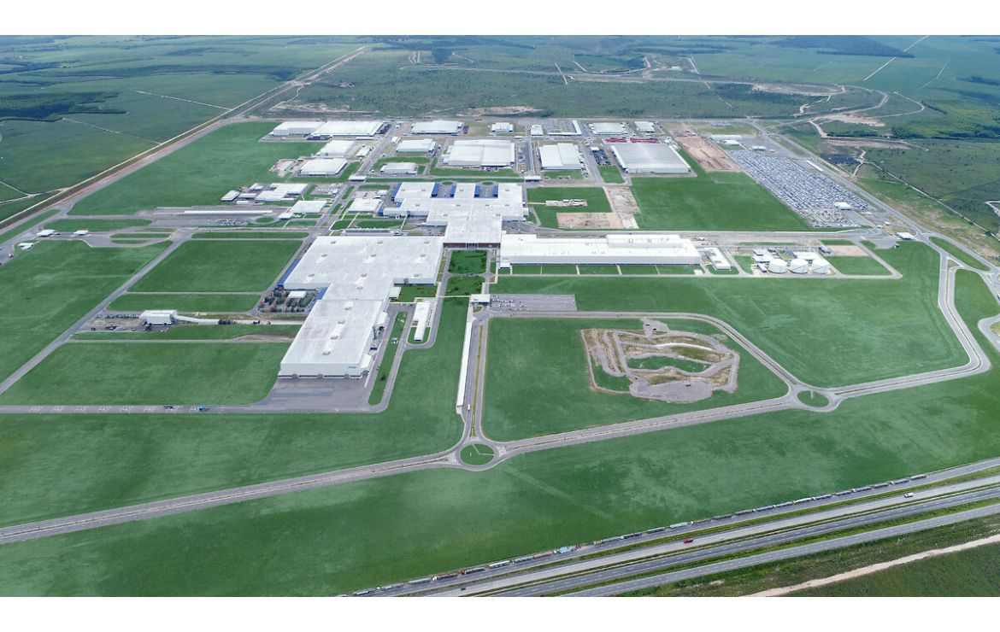

José Marcelo Nascimento Fiscina
Engenheiro de Controle e Automação | Especialista em Indústria 4.0
Integração de Sistemas • Otimização • Transformação Digital
Engenheiro de Controle e Automação | Especialista em Indústria 4.0
Integração de Sistemas • Otimização • Transformação Digital
Engenheiro de Controle e Automação com mais de 10 anos de experiência em automação industrial, dados e integração de sistemas.
Atuação nos setores automobilístico e metalúrgico, com foco em performance, confiabilidade e transformação digital.
Especialista em CLPs, SCADA, Python, SQL, Node-RED, n8n e Grafana.
🏠 Novo foco: Automação Residencial & IIoT Estou expandindo minha atuação para automação residencial e predial inteligente, integrando experiência industrial com tecnologias modernas como Home Assistant, MQTT, Zigbee, ESP32 e Node-RED para criar ambientes conectados, eficientes e personalizados.
Automação Industrial — Automotiva & Metalúrgica
Programação e comissionamento de CLPs
Desenvolvimento e startup de sistemas de controle em linhas automotivas de alta complexidade, incluindo módulos safety e integração com robôs e acionamentos.
Siemens S7 / TIA Portal · Rockwell Studio 5000/500 · Schneider Control Expert · Safety PLC Siemens · Safety PLC Rockwell · Pilz
Supervisão e SCADA
Configuração de sistemas supervisórios com alarmes preditivos, rastreabilidade de processo e interface para operadores e manutenção.
WinCC Explorer · FactoryTalk View · Elipse E3 · WEG · Delta
Integração robótica
Programação, integração e startup de células robóticas em linhas de funilaria e montagem automotiva.
ABB · KUKA · FANUC · Comau
Redes e acionamentos industriais
Configuração de redes de campo e parametrização de inversores para controle de movimento e comunicação entre dispositivos.
Profinet · Profibus · Ethernet/IP · DeviceNet · Modbus · SEW · ABB · Lenze · WEG
Padrões OEM e documentação técnica
Desenvolvimento de projetos elétricos e programação conforme padrões globais das principais montadoras.
GCCS (GM) · DCP (Ford) · VASS 5/6 (VW) · STLA · CARs (Stellantis) · EPLAN · Draw.io · S7-PLCSIM Advanced
Automação Residencial & IIoT
Sistemas inteligentes conectados
Projeto e implementação de ambientes residenciais e prediais automatizados, integrando dispositivos, protocolos e plataformas de controle.
Home Assistant · Node-RED · n8n · MQTT · Zigbee · Z-Wave · Matter · ESP32 · Arduino · Raspberry Pi
Monitoramento e dados
Coleta, armazenamento e visualização de dados de consumo, clima e energia para tomada de decisão em tempo real.
Grafana · InfluxDB · SQL Server · Iluminação · Climatização · Segurança · Energia
Gestão & Office
Liderança técnica e gestão de projetos
Coordenação de equipes multidisciplinares, elaboração de checklists FAT/SAT, treinamentos técnicos e acompanhamento de cronograma e orçamento.
Excel avançado · MS Project · Node.js · Draw.io
Liderança técnica:
Coordenei equipes multidisciplinares (até 7 profissionais) em projetos globais para montadoras, gerenciando startups de linhas avaliadas em R$ 50M+ e garantindo entregas dentro do prazo e orçamento.
MS Project · Draw.io · EPLAN
Integração dados-automação:
Projetei e implementei arquitetura de integração entre sistemas de automação (CLPs/SCADA) e camada de dados corporativos, desenvolvendo dashboards em Grafana que reduziram tempo de diagnóstico de falhas em 30%.
Siemens TIA Portal · Rockwell Studio 5000 · WinCC · FactoryTalk · Node-RED · Grafana · SQL Server
Padronização e qualidade:
Estabeleci novos padrões de projetos elétricos e documentação técnica com Draw.io, adotados como referência para 3 novas plantas, reduzindo retrabalho em 25%.
EPLAN · Draw.io · S7-PLCSIM Advanced
Projetos internacionais:
Atuei diretamente em plantas no México, coordenando integração com times locais e garantindo conformidade com padrões globais do cliente.
GCCS (GM) · DCP (Ford) · VASS 5/6 (VW) · STLA · CARs (Stellantis)
Arquitetura de dados industriais:
Projetei e implementei solução completa de coleta e armazenamento de dados para fornos de tratamento térmico, integrando CLPs Schneider (via Elipse E3 e Node.js) a bancos SQL Server, permitindo rastreabilidade completa de lotes e reduzindo refugo em 15%.
Schneider Control Expert · EcoStruxure · Elipse E3 · Node.js · SQL Server
Automação de processos:
Desenvolvi rotinas em Python para coleta automática de indicadores de produção (OEE, downtime), gerando relatórios em tempo real que melhoraram a tomada de decisão da gerência.
Python · SQL Server · Excel avançado
Modernização de supervisórios:
Liderei migração de 1 linha de abastecimento para Elipse SCADA com novos alarmes preditivos, resultando em redução de 20% em paradas não planejadas.
Elipse SCADA · Elipse E3 · Schneider Control Expert · IHM WEG · IHM Delta
Capacitação técnica:
Criei documentação e treinamentos para operadores e time de manutenção, aumentando autonomia da equipe de chão de fábrica.
Draw.io · Excel avançado
Startups de alta complexidade:
Atuei no desenvolvimento e comissionamento de 5 grandes linhas automotivas (Jeep Renegade, Compass, Fiat Toro), programando mais de 20 CLPs Siemens e Rockwell, incluindo módulos safety e integração com mais de 30 robôs KUKA/ABB.
Siemens S7 / TIA Portal · Rockwell Studio 5000 · Safety PLC Siemens · Safety PLC Rockwell · KUKA · ABB · Profinet · Profibus
Eliminação de falhas crônicas:
Diagnostiquei causas raiz de falhas recorrentes em células robóticas, implementando melhorias que reduziram paradas por problemas crônicos em 40%.
Siemens S7 · Rockwell Studio 5000 · WinCC · FactoryTalk · KUKA · ABB
Otimização de performance:
Analisei e otimizei tempos de ciclo em estações gargalo, entregando ganho de produtividade de 12% na linha de funilaria sem novos investimentos.
Siemens TIA Portal · Rockwell Studio 5000 · WinCC · FactoryTalk
Sistemas de segurança:
Programei e validei sistemas Safety PLC integrados a robôs, garantindo certificação das linhas conforme normas internacionais.
Safety PLC Siemens · Safety PLC Rockwell · Pilz · KUKA · ABB
Startup de linhas:
Participei do ramp-up de 2 novas linhas de montagem automotiva, realizando programação em Step 7 e WinCC para garantir entrada em operação dentro do cronograma do cliente.
Siemens Step 7 · WinCC · Profibus · Profinet
Suporte técnico em campo:
Atuei no suporte direto durante primeiro mês de produção, solucionando mais de 50 chamados e garantindo estabilidade operacional na fase crítica.
Siemens Step 7 · WinCC
Documentação técnica:
Colaborei na criação de manuais de operação e documentação de programas, facilitando transferência de conhecimento para equipe de manutenção.
EPLAN · Excel
Projetos elétricos:
Criei projetos elétricos utilizando EPLAN, garantindo conformidade com normas técnicas.
EPLAN

Desenvolvimento e comissionamento de linha de produção automotiva de alta complexidade com CLPs Siemens, integração robótica KUKA e ABB, e configuração de redes Profibus/Profinet.

Implementação de sistema de controle integrado para linha de produção com Siemens TIA Portal, IHM WinCC e integração robótica KUKA e ABB.

Desenvolvimento do sistema de automação para linha de montagem com CLPs Siemens, módulos safety, e integração robótica com redes Profibus/Profinet.

Comissionamento de hardware e software para os modelos B515 e B562 com Allen-Bradley (Studio 5000 / FactoryTalk), seguindo o padrão DCP, incluindo diagnóstico e resolução de falhas complexas em mesas rotativas e sistemas eletromecânicos sem documentação disponível.

Comissionamento completo com TIA Portal V13, atuando como principal ponto técnico com o cliente e reportando diretamente ao gerente da planta Gestamp. Desenvolvimento de lógica em LAD, SCL e Graph 7, além de integração de drives SEW e dispositivos SICK.
Comissionamento completo do sistema de controle com Siemens TIA Portal e Step 7, integração de inversores ABB/SEW e Safety PLC Siemens, além do desenvolvimento de IHM especializada para controle de máquina Tucker.

Integração do novo modelo GEM nas células do Body Shop com foco na eliminação de microparadas recorrentes, otimização do tempo de ciclo e aumento significativo da disponibilidade da linha (OEE), dentro do padrão GCCS da GM.

Diagnóstico de falhas em sistemas Siemens com foco em redes Profinet, implementação de melhorias contínuas e padronização operacional com treinamento técnico da equipe da planta.
Comissionamento e sincronização de portas, capôs e liftgates com a linha principal; implementação de sistemas de visão Matrox para inspeção de cola; e programação de buffers ODD/FIFO para fluxo contínuo de componentes.
Programação e start-up do software de CLP para integração do modelo GEM nas células robóticas existentes, com suporte ao SOP e otimização de tempo de ciclo em conformidade com o padrão GCCS da GM.
Condução completa do projeto desde a análise de diagramas até a entrega final, com uso de comissionamento virtual (S7-PLCSIM Advanced) para validar toda a célula — incluindo robôs ABB e sistemas Trommel — antes da instalação física.
Atuação como reforço de engenharia para mitigar atrasos causados por entrega tardia de hardware, realizando diagnóstico completo entre instalação elétrica e software, e conduzindo o comissionamento integral da célula robótica até plena operação.

Programação e otimização de múltiplas linhas robóticas de pequeno porte com células duplas ABB, resolução de falhas críticas de comunicação Profinet e suporte técnico junto à equipe elétrica da planta.

Implementação completa de sistemas de automação multi-fornecedor, desenvolvimento de SCADA com banco de dados SQL para historização, e criação de ferramentas internas de gestão financeira e CAPEX/OPEX.

Supervisão técnica e validação de projetos.

Promovido a coordenador de equipe de CLPs, liderando 5 programadores na implementação do padrão VASS 6 e na reestruturação completa da lógica de troca de modelos para viabilizar produção multi-modelo na planta.

Liderança na automação completa de duas linhas originalmente manuais, substituindo operações de retirada, soldagem e posicionamento de peças por células totalmente automatizadas com robôs industriais e CLPs Rockwell, dentro do novo padrão global STLA da Stellantis.

Suporte crítico à produção 24/7 e resolução de falhas crônicas em linhas de produção.
Tenho interesse em projetos desafiadores e colaborações inovadoras. Sinta-se livre para entrar em contato!